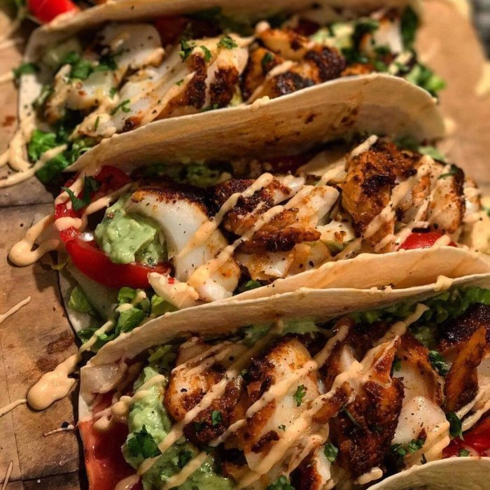

Home
Ceviche

Description
El ceviche es el plato más representativo del Perú. Es un plato fresco y delicioso preparado con pescado fresco marinado en limón.
Es perfecto para los días calurosos y se sirve con choclo, camote y cancha.
Ingredientes
- 500g de pescado fresco
- 10 limones
- 1 cebolla roja
- Ají limo al gusto
- Sal y pimienta
- Culantro
Steps
- Cortar el pescado en cubos
- Exprimir los limones sobre el pescado
- Agregar sal, pimienta y ají limo
- Mezclar y dejar reposar 5 minutos
- Agregar cebolla y culantro
- Servir con choclo y camote